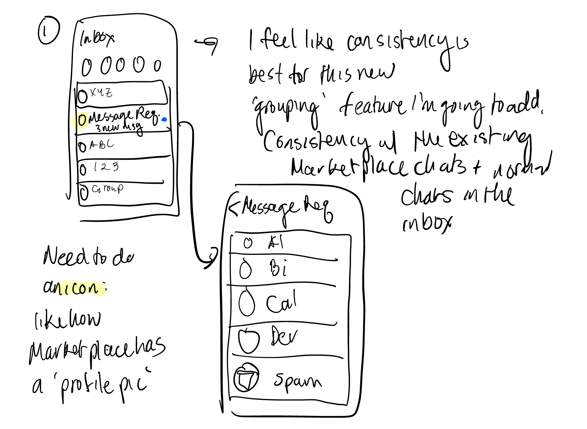

For my first case study, I found a free UI/UX course fromStudents
Who Design. It includes three lecture videos and three assignments in this self-paced course. The
goal of
the course is a case study on a Facebook Messenger people problem (mobile version 278.0).
MY ROLE
User Research
Wireframe
Prototyping
Visual Design
TEAM
Just me : )
TOOLS
Figma
Affinity Mapping
TIMELINE
3 weeks
The Challenge
How can Message Requests be improved to complete more interactions? I went
into my user interviews with an objective to find the pain points of Message Requests on Messenger
mobile.
User Interviews
After my interviews, I came away with these insights:
The level of visibility of Message Requests needs to be adjusted for its purpose. One person
said they felt ‘scattered’
trying to
look for Message Requests. Some also liked how Message Requests kept messages from strangers
separate from their friends' messages.
People only check Message Requests with a specific purpose in mind. Examples of purposes that
lead people to check their Requests might
be to respond to a notification, to buy or sell on Marketplace, to look for a roommate, to get in
contact with your girlfriend's dad, or to plan a surprise party.
People don’t mind responding to strangers if the message has a purpose and the person is not a bot
or spam. See purposes mentioned above.
People have unwanted contact from people in Message Requests. Messenger tries to sort certain
messages into the Spam folder inside Message Requests, but there is no way
Messenger has an algorithm that determines whether your estranged relative's message should go into the
Spam folder.
Affinity mapping to synthesize the information learned from interviews
People Problem Statement
After processing the information from user interviews, I refined my people problem statement. People would
respond to Message Requests, but can’t because:
Message Request visibility needs to be adjusted.
People don’t respond to Message Requests because they don’t have a reason to check Requests
often.
Brainstorming Solutions
I brainstormed features to solve the problem stated above while keeping the above insights in mind. These
are the (initial) top three features
after I did a SWOT analysis and looked at feasability/impact:
Marketplace chat grouping feature mentioned in bullet point 2
Subject lines for Message Requests. Have a stamp to show the category of the message. I picked
this feature because in the user research, people mentioned they would respond to a Message Request if
the request showed a clear purpose.
Group Message Requests similarly to how Marketplace chats are grouped. Marketplace chat grouping
is a feature in Facebook Messenger, where if someone messaged you regarding buying/selling on
Marketplace, the Marketplace chat would pop to top of the Chats list. I was thinking of applying this to
Message Requests; that way,
Message Requests will only be at the top of the Chats if someone sends them a request.
Add a red badge icon to the Spam folder within Message Requests. From user research, people
said that they liked a spam-free inbox. But at the same time, people found it awkward responding to
Message
Requests weeks later. One person I interviewed told me that had an anecdote: when she checked the Spam
folder, she found that someone from her hometown, who was going to the same college as her, had messaged
her two years ago.
I started sketching out these features and what they might look like. During the process, I
wasn't entirely satisfied with the solutions that I brainstormed. I was doing some self-reflecting during
each stage of the design process, but I wanted guidance and feedback as well. I called my friend, Martina,
who is a UI/UX designer.
Some key lessons I learned from Martina is to always remember the problem you are trying to solve and who
you are trying to solve it for. When I told her about the 'stamp' feature for Message Requests, she asked,
"What would the stamps accomplish without a person’s profile picture and their identifier? Why would you
need stamps in the context of Message Requests?". I also talked to her about my uncertainty in the decisions
I've made in the design process. Martina reassured me by saying that I can always iterate again and again,
since at
different stages of the design process, new information will come. That made me realize if I feel I
am headed the wrong way, I can always turn back or course correct.

Brainstorming Solutions...Again
After reflecting with my friend about the design direction I was headed, I decided to revisit the list of
solution features I brainstormed. I scratched the stamp feature, because while trying to answer 'what would
stamps accomplish in the context of Message Requests', I found my answers were shoddy at best. I was hoping
they would be eye-catching and therefore people would open up the request and respond to it. I realized the
main problem was the hierarchy of where Message Request sat.
The features I went forward in the design process with were chosen because they solve the visibility problem
of Message Requests that gets in the way of people from responding to them. I decided to add notifications
to the Spam folder, and to move Message Requests to the main Chats view.
Wireframes
I had a few entry point, middle section, and end point scenarios and user flows that I did med-fi wireframes
on.
In the three images below, I wanted to decide on how to adjust the visibility of Message Requests. In
wireframe A, I made Message Requests like a Marketplace chat grouping. The pros of this would be that
Requests would only show up at the top of your chats if you received a new request. The cons are that
displaying Message Requests like this could be irritating. From my user interviews, I gained the insight
that there is a lot of unwanted contact in the Message Requests inbox. I'm sure it would be frustrating to
keep having people you don't want to hear from being front and center in your Chats.
In wireframe B, I made Message Requests a tab in the bottom navigation bar. One of the questions I
asked during my interviews was 'Show me how to get to Message Requests'. Users often first clicked on the
'People' tab at the bottom.
In wireframe C, I tried to experiment with an 'All Messages' tab at the bottom. This would be similar to how
Gmail has 'Inbox' and 'All Mail'. In 'All Mail', peole can see all their messages across all categories.
Similarly, 'All Messages' in Messenger would show all your chats from your friends, in addition to Requests.
There are cons to this feature. The first is that this 'All Messages' inbox could be so subtley different
from 'Chats' that it could be confusing. The second is that I had to think back to the original problem I
was trying to solve, which was trying to decrease the number of missed connections with Message Requests. If
I did have an 'All Messages' tab, there could be a Request from months ago that would require the user to
scroll far back in the inbox, ultimately decreasing the visibility of Message Requests even more.
I decided to go forward with wireframe B. It seemed to be an intuitive solution with fewests cons.
A
B
C
I included a notifcation for the spam folder as well, because the way Messenger sorts spam is not perfect.
People that I interviewed often found important messages sorted into spam. The way people interact on
Messenger is diverse and unique, so I thought to preserve the good aspects of the Spam folder while drawing
more attention to the Spam folder with a notication.
In wireframe D, I tried to imitate the Marketplace Chat and how Messenger already displays unread chats. I
liked how this is consistent with the rest of Messenger Mobile.
In wireframe E, there is the navigation bar at the bottom. The reason why having the navigation bar with the
Request tab and the badge notification is important is so that people can keep track of the number of unread
messages, considering there is the Spam folder, which will have its own number of unread messages, and the
actual message requests.
This is also similar to how the Chats badge notification and the notification for unread messages for
Marketplace works.
I ultimately went with wireframe D because it shows the number of unread Message Requests clearly and is
consistent with the rest of Messenger.
D
E
F
Prototype
Here is a prototype of the notification features. We are opening a Spam message in Message Requests.
Click here
for the Figma file.
What I Learned
The main takeaway from this case study is that I learned a design process. I learned one way to come up with
a People Problem, gained knowledge about user research, familiarized myself with Figma, and learned how to
wireframe and prototype. During these steps, I realized that it is important to document your progress and
to be able to articulate clearly why I went with one feature, design, user flow, etc. over another. I still
have a lot to learn, considering the number of research processes and design processes are out there.
I also learned that design isn't just about me or one individual person. That's why it's
important to listen to stories be aware of my biases. I need to make decisions informed by
the people, not based off of what I think is flashy or what I think people would want.